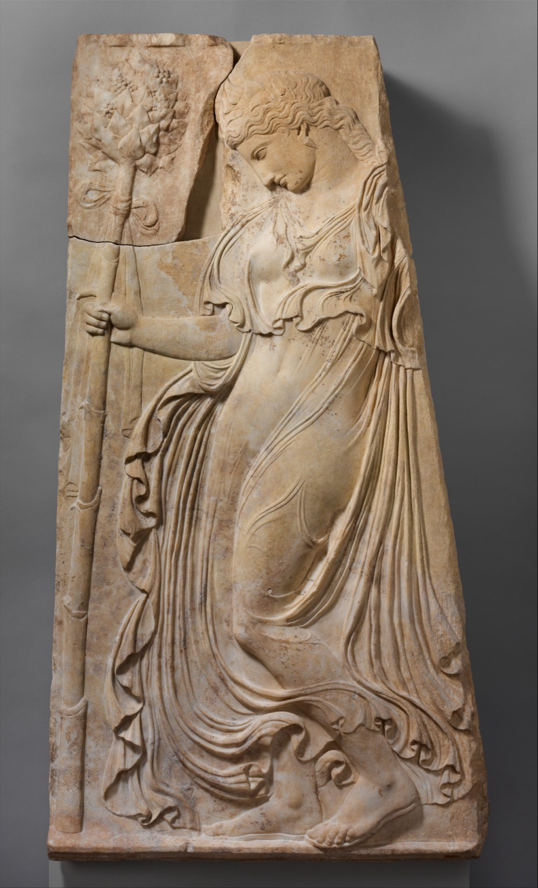

Classico
Capitelli corinzi, greche, palmette ioniche, panneggi neoattici. L'ornamento greco e romano, e il modo in cui il neoclassicismo lo ha riletto.
Serie limitata
Borse e gioielli scolpiti dal repertorio classico e siciliano. Ogni pezzo è finito a mano, uno alla volta.

Ogni pezzo porta il suo numero inciso sul fondo.
Fondo, patina e pennello asciutto, pezzo per pezzo.
Acciaio inox 316L di serie, titanio su richiesta.
Due repertori
Capitelli corinzi, greche, palmette ioniche, panneggi neoattici. L'ornamento greco e romano, e il modo in cui il neoclassicismo lo ha riletto.
Intrecci arabo normanni, mascheroni barocchi, maioliche di Caltagirone. Un repertorio meno battuto, e più difficile da imitare.
Modello, motivo, finitura, minuteria. Il monogramma si incide sul fondo, fino a tre lettere.
Quattro pietre. Il colore è nel materiale, non steso sopra.
Lascia un indirizzo. Una sola email, quando i pezzi escono.
Scriviamo una volta sola, quando la prima serie è pronta.